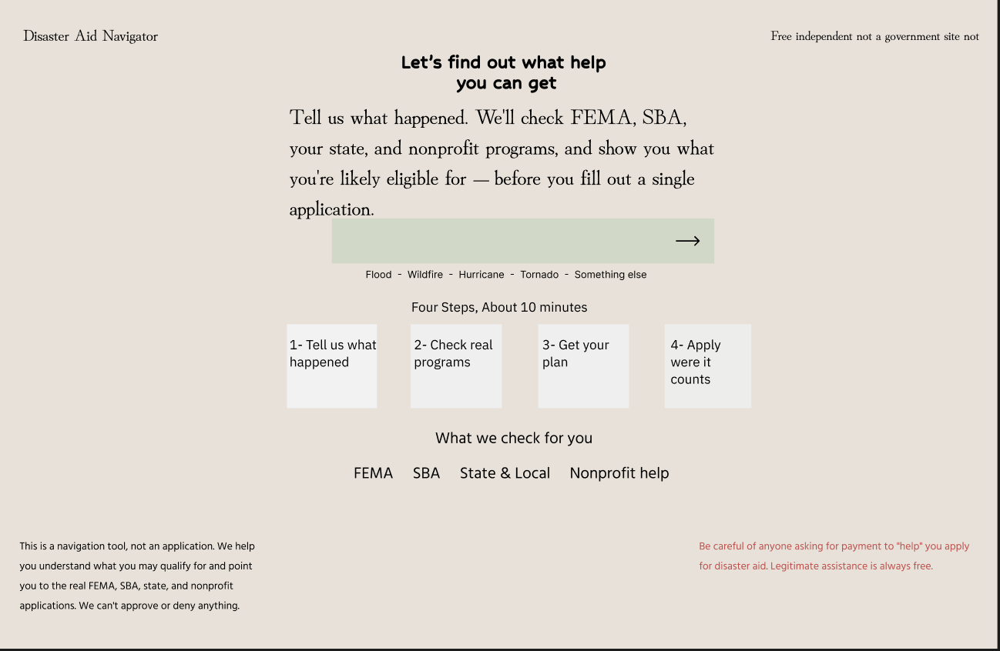

Case study
One less stop between a disaster and the help to rebuild
- Role
- Solo: product concept, research, UX, front-end build, grant proposal, partner deck
- Timeline
- July 2026 – in progress
- Built with
- HTML, CSS, JavaScript; no build step, no backend
- Languages
- English, Español, 中文, Tagalog, Tiếng Việt
Why I built it
At FEMA, I heard the same three questions over and over:
- “Is my state declared?”
- “Why was I denied?”
- “Where is my case worker?”
With my background in psychology, I could hear more than the question. I could hear the frustration of going back and forth with FEMA, retelling the same story, just to get the help needed to rebuild. People weren’t confused because they weren’t trying. The system made them do the work of connecting four separate programs on their own, at the worst moment of their lives.
I built the Disaster Aid Navigator to be one less stop: one place that answers those questions and shows every program that might help, before anyone fills out a single application.
The problem
Source: GAO-26-108057
Many denials are fixable: a missing document, steps done in the wrong order, or a program the household never knew to try.
- Four separate systems. FEMA Individual Assistance, SBA disaster loans, state and local programs, and nonprofits each have their own rules, forms, and deadlines.
- The people hit hardest have the least slack. Most applicants are uninsured and earn under $50,000 a year.
- Advice arrives in pieces. Survivors hear about one program at a time, often after a deadline has passed.
The Navigator is built to answer the three questions I heard every day at FEMA, before a household has to call anyone:
| What survivors asked | How the Navigator answers it |
|---|---|
| “Is my state declared?” | Checks whether the county has a declaration that includes household aid, and shows dated updates for recent disasters |
| “Why was I denied?” | Every program in the plan explains the rule behind a “no,” and what to do if a letter says “ineligible” |
| “Where is my case worker?” | Points to the right agency and, in the pilot, a consent form that lets a partner case manager follow up in the household’s language |
Who it’s for and the goals
The primary user is a household in the first days after a disaster: stressed, often on a phone, possibly not reading in English, and unsure which agency to call first. The secondary user is a case manager or nonprofit partner who needs a quick picture of where a household stands.
- One screening covers all four aid systems at once.
- The result is an action plan, not a yes-or-no verdict.
- Plain language in five languages, with an optional read-aloud mode.
- Collect as little personal data as possible.
- Every result links to its official source, so the household can check it.
The solution
The Navigator turns four rulebooks into one four-step path for the household.
- Answer. Six short steps on a phone: urgent needs, the disaster and location, housing, losses, insurance, and household details. A typed description such as “our house flooded” pre-fills the disaster type.
- Screen. The answers are checked against the FEMA Individuals and Households Program, SBA disaster loans, American Red Cross aid, and state programs for Texas, Florida, Washington, California, and Oklahoma.
- Plan. The household gets programs sorted into likely and possibly, the documents each needs, the order to apply in, live deadline countdowns, and what to do if a letter says “ineligible.”
- Apply. Each program links to its official application. In the preview, an optional consent form shows how a case manager would follow up in the household’s language, though nothing is sent.
From first draft to MVP
My first landing-page draft already had the core idea: start with what happened, not with a form. Building it out into the live MVP changed four things.

| First draft | Live MVP | Why it changed |
|---|---|---|
| Disclaimer and scam warning sat in the footer | “Nothing you type here is submitted anywhere” sits right under the input | Trust has to come before someone types anything about their home or income |
| Four step cards showed only a title | Each step says what happens (“no forms, just a conversation”) | A stressed reader needs to know what they’re agreeing to |
| No sign of what was current | Dated updates for recent disasters, such as the July 2026 Texas floods | The first question people ask is “Is my state declared?” |
| No reason given for which states are covered | “States we cover first,” with declaration counts | Being honest about coverage answers “why isn’t my state here?” |
Feedback from my professor. After reviewing the MVP, my professor pushed on two things: go further on accessibility (ADA), and make the results page clearer. Both point at the same person: someone exhausted after a disaster, maybe with a disability, who needs to know what to do next at a glance. Those two changes are my next iteration.
Key decisions and trade-offs
The biggest choice was trust over cleverness: every answer the tool gives must be predictable, explainable, and checkable against an official page.
| Decision | Why | Trade-off |
|---|---|---|
| A fixed rules engine decides eligibility, not AI | The same answers always give the same result, and every result traces to a named rule and source | Rules are kept up to date by hand; unusual cases land in “possibly” with a note to check |
| Everything runs in the browser, with no backend | Survivors share sensitive details (income, citizenship, damage). Nothing typed leaves the device | Progress can’t be saved across devices, and there are no usage analytics yet |
| A screening, not a decision | “Likely” and “possibly” set honest expectations; only the agency decides | Answers feel less definitive to a stressed household |
| Five languages plus on-device read-aloud | Reaches the communities most affected after disasters, including people who prefer listening | Translations are machine-drafted and still need native-speaker review |
| Notes for specific recent disasters, such as the July 2026 Texas floods | Real, current guidance is what helps most | It goes stale fast, so each program shows a “reviewed” date and the data has a version number |
| Plain HTML, CSS, and JavaScript | A nonprofit partner could host and maintain it for free, without a developer toolchain | Less structure as the codebase grows |
| Write at a 6th–8th grade level, say “may qualify,” and never look like FEMA | Scams spike after disasters. Clear, humble language and a “not a government site” label protect people | Some program details get simplified, so every result links to the official page |
| Build state programs first for the five states with the most declarations | California (362 since 1980) and Texas (355) lead the country; Texas is home base and the natural pilot | Other states get federal and nonprofit results plus 211 for local help |
| Reach people through partners, not ads | Disaster traffic arrives in spikes. 211, county emergency management, VOADs, and libraries already reach survivors | Growth depends on partnerships, which take time to build |
How I used AI, and where I chose not to
I kept AI out of the one place where a wrong answer could cost a family money: the eligibility decision.
- Not used for eligibility. A language model can sound confident and still be wrong, and it can give two people with the same answers two different results. The Navigator’s results come only from written rules, each tied to an official source.
- A chat-style start, without the risk. The landing page lets people describe what happened in their own words. Simple keyword matching in all five languages (“flood,” “inundación,” “ngập”) picks the disaster type, so it feels conversational but behaves predictably.
- Used for first-draft translations. The Spanish, Chinese, Tagalog, and Vietnamese text was machine-drafted to make the MVP possible, and is marked as needing native-speaker review before public use.
- Used to sharpen wording. AI helped me turn agency language into plain, 6th–8th grade sentences. I checked each rewrite against the official program page so nothing promised more than the program does.
- Used to fix code. AI helped me find and fix bugs in the JavaScript. I tested each fix in the live MVP before keeping it.
- Used to learn accessibility features. AI showed me how to add language switching and a read-aloud voice option, so people with low vision, low literacy, or other disabilities can use it. That matters because applicants with a disability are approved less often (46% vs. 50%).
What didn’t work, and current limits
The hardest part was not the code but keeping the rules true: aid programs change faster than a hand-built list can.
- Program data goes out of date. Deadlines and amounts are entered by hand. In 2026 alone, FEMA denied household aid for the July Texas floods and changed its maximum award amounts. I added review dates and a data version so staleness is visible, but the real fix is a live data feed.
- Only five states have local programs. Texas, Florida, Washington, California, and Oklahoma are covered; everyone else gets federal and nonprofit options plus a pointer to their state.
- The screening can’t see everything. SBA checks credit history and FEMA verifies identity when someone applies, so the tool says so instead of guessing.
Results so far
The MVP is live and public, covering 15 aid programs across four systems in five languages, with a grant proposal and a partner deck for a funded pilot.
- Funding path: a grant proposal with three gated phases.
- Partner deck: a 9-slide pilot briefing for 211, county emergency management, and nonprofit partners.
What’s next
The grant proposal turns the MVP into a funded pilot in three phases, each unlocked by a gate. Each phase’s share of the grant is released only after the gate before it is met.
- 1. Harden the MVPVerify every program ruleNative-speaker review
- Rules verified
- 2. Pilot with a partnerReal households, one partnerTrack pilot outcomes
- Pilot targets met
- 3. Evaluate and scaleMeasure mission impactScale beyond the pilot
The most important upgrade is replacing hand-entered program data with live feeds from OpenFEMA, SBA, and state sources. The partner deck keeps the ask small and low-risk:
- Choose a pilot area: one county or service area recently hit by a declared disaster.
- Link it in: add the Navigator to the partner’s website, 211 scripts, and outreach.
- Review results: count screenings and referrals after a set period, without storing personal data, and decide next steps.
Next iteration, from professor feedback:
- More accessibility (ADA): screen-reader labels on every control, visible keyboard focus, a larger-text option, high-contrast colors, and reduced motion, checked against WCAG 2.1 AA.
- A clearer results page: a short summary at the top (“Apply to these 3 now”), one document checklist, numbered next steps, and a print or save option for people without steady internet.